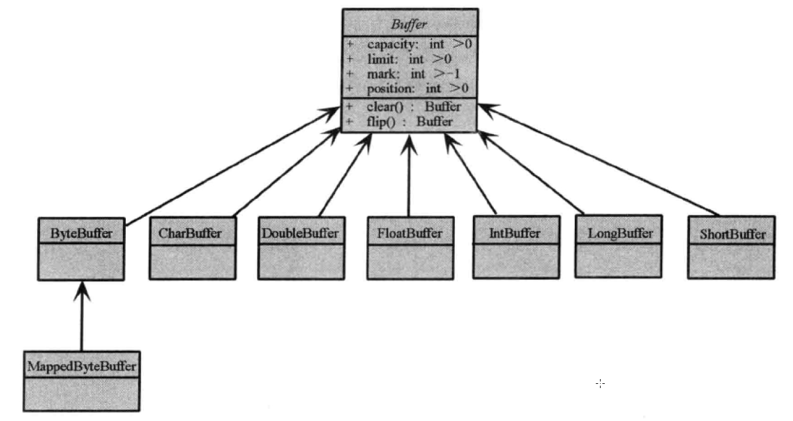

# Nio
# Nio
NIO指非阻塞式I/O.
JDK的NIO为Socket和ServerSocket 提供了 SocketChannel和ServerSocketChannel两种不同的套接字通道实现。支持阻塞和非阻塞两种操作。
4.1.1.3. NIO 类库简介
4.1.1.3.1. 缓冲区Buffer
- NIO 库中，所有的操作都是用缓冲区处理的(读写)
- 缓冲区实质上是一个数组。通常是
ByteBuffer,JDK基本数据类型(除Boolean)都有对应的缓冲区实现。 - 提供对数据结构化访问以及维护读写位置(limit)等信息

除了ByteBuffer外，其他的实例都有完全一样的操作。ByteBuffer方便网络的读写
4.1.1.3.2. 通道 Channel
Channel 像自来水管一样，网络数据通过Channel读取和写入
- 通道是双向的（流是单向的且必须是InputStream和OutputStream的子类），读写可同时进行
- 全双工的；能更好的映射系统API,如UNIX网络模型中，底层操作系统的通道都是全双工的。同时支持读写操作。

前三层几乎上都是接口定义Channel功能。可分为两大类：
- SelectableChannel ： 网络读写
- FileChannel : 文件读写
4.1.1.3.3. 多路复用器 Selector
多路复用是NIO的基础，非常重要！
提供选择已经就绪的任务的能力
简单来说：
Selector会不断轮训注册在其上的Channel，如果某个Channel上面发送读或则写事件，这个Channel就处于就绪状态，会被Selector轮询出来，然后通过SelectorKey可以获取就绪Channel的集合，进行后续的I/O操作一个多路复用
Selector可同时轮训多个Channel.JDK使用eplll()实现select，所以可以用一个线程负责Selector的轮训，就可以接入成千上万的客户端。
4.1.1.3.4. 服务端通信序列图
- 打开sock通道
- 绑定监听端口，并设置链接为非阻塞模式
- 创建多路复用器，并启动线程
- 将通道注册到 线程的多路复用器上，并监听
accept事件 - 多路复用器在线程run方法中无线轮询准备就绪的
Key - 多路复用器监听到有新的客户端接入，处理新的接入请求，完成TCP三次握手，建立物理链路
- 设置客户端链路为非阻塞模式
- 将新接入的客户端链接注册到 多路复用器上，监听 读 操作。读取客户端的信息
- 异步读取客户端请求信息到缓冲区
- 对ByteBuff进行编码，如果有半包消息指针 reset。继续读取后续报文
- 调用SocketChannel的异步write，将消息异步发送给客户端。
注意： 如果发送区TCP缓冲区满，会导致写半包，次数，需要注册监听写操作位，循环写，直到整包消息写入TCP缓冲区中。 这些内容Netty中有处理策略。
4.1.1.3.5. 客户端通信序列图